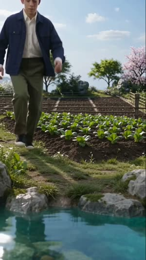
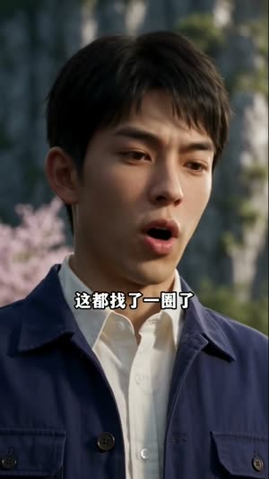
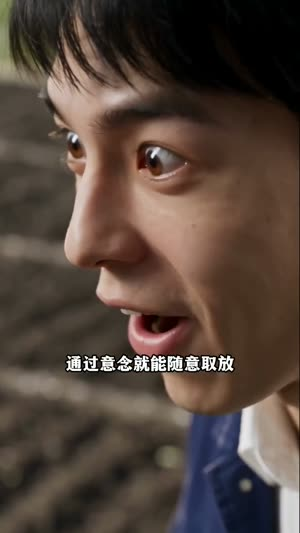
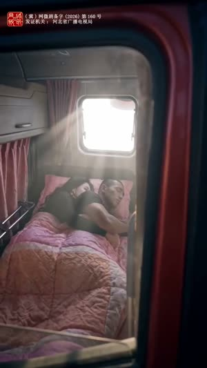
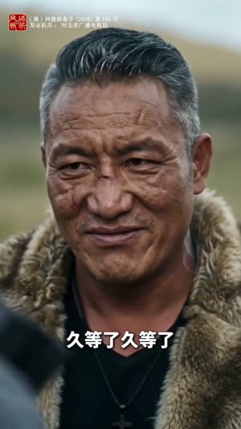
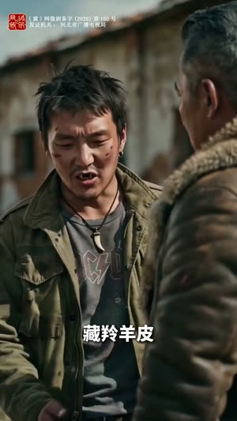
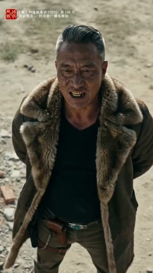

套用实战
拿两部剧，真跑这张打法卡
流程：先把两部原片各自解析一遍 → 拿打法卡逐条对照（命中/替代/缺失当场标清）→ 剪辑师确认后剪出成片。
以下所有画面都来自原剧真实片段，保留原声。
第一步 · 原片解析
剧一《宝塔空间》· 穿越种田剧
3 段素材 · 讲述现代青年车祸穿越 60 年代、身怀宝塔空间金手指
总时长 249s切镜 286平均镜头 0.87s解说字幕 自带


解析方式：整片切镜清点 + 逐段抽帧标注（场景/人物/情绪），为对照做准备。
剧二《多玛谷》· 高原货运枪战剧
2 段素材 · 讲述货运夫妻接单入藏，误入盗猎者黑吃黑局
总时长 334s切镜 340平均镜头 0.94s解说字幕 自带


解析方式：同上。两部原片节奏都快于打法卡模板的 1.6s，按"就快节奏"处理。
第二步 · 对照打法卡（咖妃卡 6 要素）
| 打法卡要素 | 剧一判定 | 剧二判定 |
|---|---|---|
| ① 钩子三段式：1 秒立预期 → 硬切反转 → 5 秒解释 | 命中 过马路是预期 → 第 3 秒车祸穿越 → "同名同姓+宝塔记忆"解释 |
命中 夫妻卧谈是预期 → 接单"三个条件" → 盗猎者"尸体往峡谷一推"威胁反转 |
| ② 平均 1.6s 节奏 + 特写优先 | 命中 原片 0.87s，就快节奏 | 命中 原片 0.94s |
| ③ 全程解说字幕 | 命中 | 命中 |
| ④ 悬念卡点收尾 | 替代→省略 素材收束为亲情喝粥；九层疑问位于故事中前段，置尾将倒置B因果——按保留因果规则省略并记录于 matches.json |
命中 素材结尾即伏击爆发，天然卡点 |
| ⑤ 4–8 分钟时长 | 部分适配 素材共 249s，先出 80s 试剪验证 | 部分适配 素材共 334s，先出 108s 试剪验证 |
| ⑥ "一秒可视"的反差人设 | 替代 黑皮喜剧人设 → 换成"穿越+金手指到账"，同为秒懂反差 |
替代 换成"文明生意 vs 黑吃黑"，情绪由喜转危，属降级替代 |
规则：替代与缺失必须明说，宁缺毋滥，不硬凑。剧二第⑥条就是降级替代的实例。
第三步 · 成片一《宝塔空间》 3分10秒（技能管线版）
00–08s钩子自述+过马路立预期，第3秒车祸硬切穿越
08–16s苏醒土炕睁眼坐起→冰河淹死回忆（B自身正叙）
16–31s解释融合记忆“脑子里多了座宝塔”→出院子“金手指到账”
31–56s亲情锚母亲扑炕痛哭→九姐自责“让你下河捞鱼”（B原片顺序）
56–71s

轻喜换衣避嫌“你是妈身上掉下来的肉”→母姐出门71–124s

金手指进空间：药田瀑布→喝灵泉水→“还有二层三层直到九层/楼梯在哪”124–165s

逆袭出空间在家没种子→挖枸杞树得活根→种入宝塔→“作弊神器”165–190s收束回家喝粥“咱们一起喝/你赶紧吃吧”——B自身亲情收束
本版由技能管线渲染：edit-plan 通过 check-plan（源文件hash/时长/证据节点/片段包含全验证）→ render 顺序截取+保留原声 → qa 完整解码与时长容差通过。卡点要素按“保留B因果顺序”规则省略并记录于 matches.json。
第三步 · 成片二《多玛谷》 2分13秒（技能管线版）
00–12s

立预期卡车日出+夫妻卧谈“跟了大川半年了”12–30s信息钩电话接单“答应我三个条件/报酬绝对让你满意”
30–54s

入险破厂房验货点钞“皮料和羊绒是大肥肉/金钱的味道”54–84s

威胁盗猎者目送+密谋“那个叫阿娅的女人/联系格桑/尸体往峡谷一推”84–93s

察觉车内“那眼神不对劲/没到蓉城卸了这车货”93–112s备战阿娅持枪“大川你这是干嘛/把头缩在仪表盘下面”
112–133s卡点峡谷疾驰→伏击爆发→“把他们全剁了”，高潮即停
七段全部落在已验证的证据窗口内；威胁反转要素由“盗猎者密谋”承接（与咖妃卡的喜剧硬切同构不同情绪）；反差要素降级替代并已在 matches.json 声明。
完整过程文件（剪辑计划、对照报告）随站点一并归档。本页成片为方法验证试剪，不构成投放效果承诺。